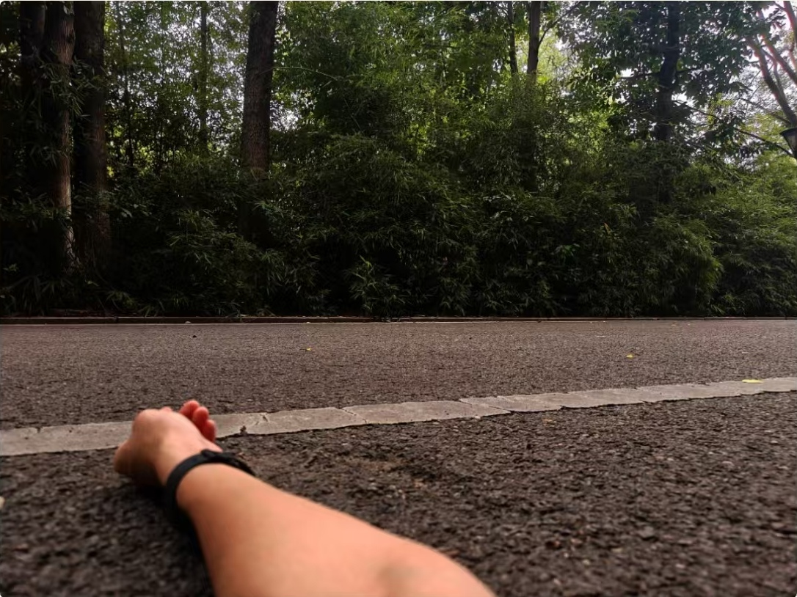
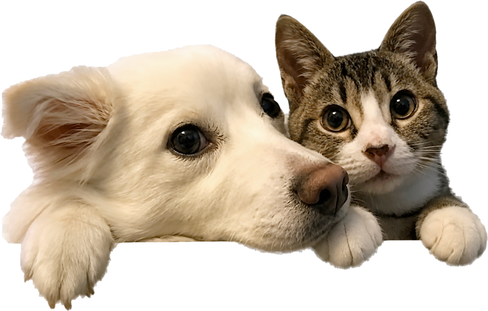

<!doctype html>
<html lang="zh-CN">
<meta charset="UTF-8">
<meta name="viewport" content="width=device-width,initial-scale=1">
<title>路慢慢 · 完整照片与安静首页 · 待确认预览</title>
<style>
:root{--paper:#f6f4ed;/*暖纸张：沿用页面基底*/--ink:#20261f;/*深墨：主文字*/--muted:#626b60;/*灰绿：次文字*/--accent:#3f5f4c;/*墨绿：操作*/--orange:#d97849;/*陶土橙：导航标记*/}
*{box-sizing:border-box}body{margin:0;background:var(--paper);font-family:'Microsoft YaHei',sans-serif;color:var(--ink)}
.page{width:360px;min-height:800px;zoom:3;position:relative;padding:0 22px 80px;background-image:linear-gradient(#59634604 1px,transparent 1px),linear-gradient(90deg,#59634604 1px,transparent 1px);background-size:8px 8px}
.status{display:flex;justify-content:space-between;align-items:center;height:34px;font-size:11px;font-weight:600}.status small{font-size:9px}
header{margin-top:20px}.brand{font-size:11px;letter-spacing:4px;color:var(--muted);margin-bottom:10px}.date{display:flex;gap:12px;align-items:baseline}h1{font-size:30px;line-height:1.2;letter-spacing:-1px;font-weight:650;margin:0}.weekday{font-size:15px;color:var(--muted)}
.photo-area{position:relative;margin-top:91px}.photo-frame{margin:0;padding:36px 12px 18px;background:#fdfbf5;border:1px solid #6f675a24;box-shadow:0 6px 17px #5b513310}
.photo-open{display:block;color:inherit}.photo{display:block;width:auto;height:auto;max-width:100%;max-height:350px;object-fit:contain;margin:auto}
.pets{position:absolute;width:166px;height:auto;right:2px;top:-83px;pointer-events:none;filter:drop-shadow(0 1px 1px #3c301a12)}
button,a{font:inherit;-webkit-tap-highlight-color:transparent}button{color:var(--accent);background:none;border:0;min-height:44px;cursor:pointer}a:focus-visible,button:focus-visible{outline:2px solid var(--accent);outline-offset:3px}
.replace{display:flex;justify-content:flex-end}.replace button{font-size:12px;padding:0 2px 0 16px}
blockquote{margin:22px 5px 0}.quote-mark{color:var(--orange);font-size:23px;height:18px;line-height:1}blockquote p{font-size:16px;font-weight:400;line-height:1.85;margin:5px 0 0}
nav{position:fixed;bottom:0;left:0;width:360px;height:55px;zoom:3;display:flex;padding-bottom:8px;border-top:1px solid #20261f24;background:var(--paper)}nav button{flex:1;font-size:12px;position:relative;color:var(--muted)}nav .active{color:var(--ink)}nav .active:after{content:'';position:absolute;bottom:2px;left:35px;width:20px;height:2px;background:var(--orange);border-radius:2px}.homebar{position:absolute;width:112px;height:3px;bottom:3px;left:124px;background:#77796f;border-radius:3px}
.fit-checks{display:none}.testing .page,.testing nav{display:none}.testing .fit-checks{display:flex;gap:22px;padding:36px;align-items:start}.sample{width:180px}.sample p{font-size:14px}.sample .photo-frame{padding:20px 10px}.sample .photo{max-height:250px}
@media(max-width:600px){.page,nav{zoom:1;width:100%}.page{min-height:100dvh}nav .active:after{left:calc(50% - 10px)}.homebar{left:calc(50% - 56px)}}
</style>
<main class="page" aria-label="静态设计预览，未实施到 App">
 <div class="status"><span>10:12</span><small>5G ▂▄▆ 26</small></div>
 <header><div class="brand">路慢慢</div><div class="date"><h1>9月8日</h1><span class="weekday">星期二</span></div></header>
 <section class="photo-area" aria-label="照片">
  <figure class="photo-frame"><a class="photo-open" href="today-photo-extracted.jpg" target="_blank" aria-label="查看完整照片"></a></figure>
  
  <div class="replace"><button type="button" onclick="document.querySelector('#photo-input').click()">换一张</button><input id="photo-input" type="file" accept="image/*" hidden></div>
 </section>
 <blockquote><div class="quote-mark">“</div><p>每一个平凡的奋斗者，<br>都是卓越的追梦人。</p></blockquote>
</main>
<nav aria-label="导航示意"><button class="active">今天</button><button>收支</button><button>回想</button><button>记下</button><div class="homebar"></div></nav>
<section class="fit-checks" aria-label="比例测试图，不是 App 页面"></section>
<script>
document.querySelector('#photo-input').onchange=e=>{const file=e.target.files[0];if(!file)return;const url=URL.createObjectURL(file);document.querySelector('.photo').src=url;document.querySelector('.photo-open').href=url;document.querySelector('.photo').alt='所选完整照片';};
// Geometry fixtures verify the same non-cropping CSS without inventing user photos.
if(location.search.includes('ratios')){document.body.classList.add('testing');const cases=[[1600,900,'横图 16:9'],[900,1600,'竖图 9:16'],[1000,1000,'方图 1:1'],[4000,500,'全景 8:1'],[500,4000,'长图 1:8']];Promise.all(cases.map(([w,h,label])=>new Promise(resolve=>{const cell=document.createElement('div');cell.className='sample';cell.innerHTML=`<p>${label}</p><figure class="photo-frame"></figure>`;document.querySelector('.fit-checks').append(cell);const img=cell.querySelector('img');img.onload=()=>{const r=img.getBoundingClientRect();const ratio=r.width/r.height;const pass=Math.abs(ratio-w/h)<.01 && r.width<=158.1 && r.height<=250.1;cell.dataset.result=pass?'PASS':'FAIL';resolve(pass)};img.src='data:image/svg+xml,'+encodeURIComponent(`<svg xmlns="http://www.w3.org/2000/svg" width="${w}" height="${h}" viewBox="0 0 ${w} ${h}"><rect width="${w}" height="${h}" fill="#e4e9e1"/><rect x="4" y="4" width="${w-8}" height="${h-8}" fill="none" stroke="#3f5f4c" stroke-width="8"/><path d="M0 0L${w} ${h}M${w} 0L0 ${h}" stroke="#a3b09e" stroke-width="4"/><circle cx="${w/2}" cy="${h/2}" r="${Math.min(w,h)/5}" fill="#c88a65"/></svg>`)}))).then(results=>document.body.dataset.fitResult=results.every(Boolean)?'5 PASS':'FAIL')}
</script>
</html>
